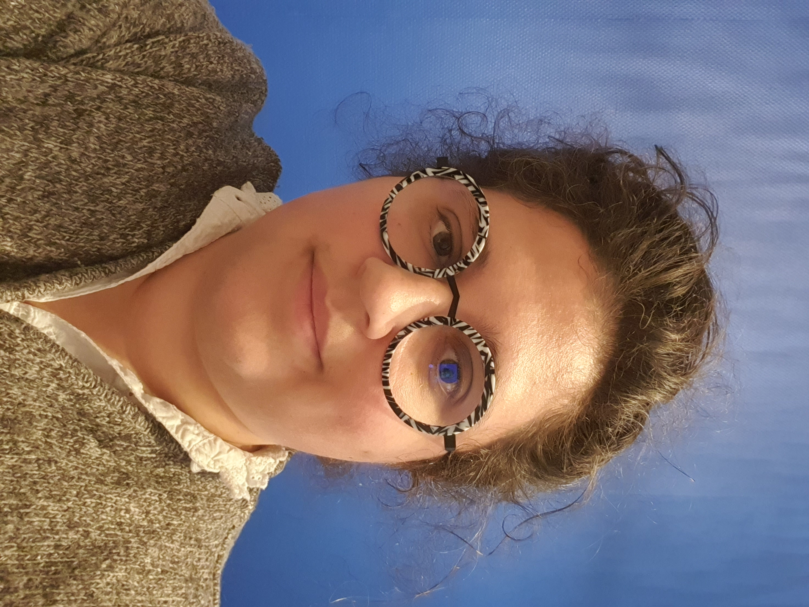
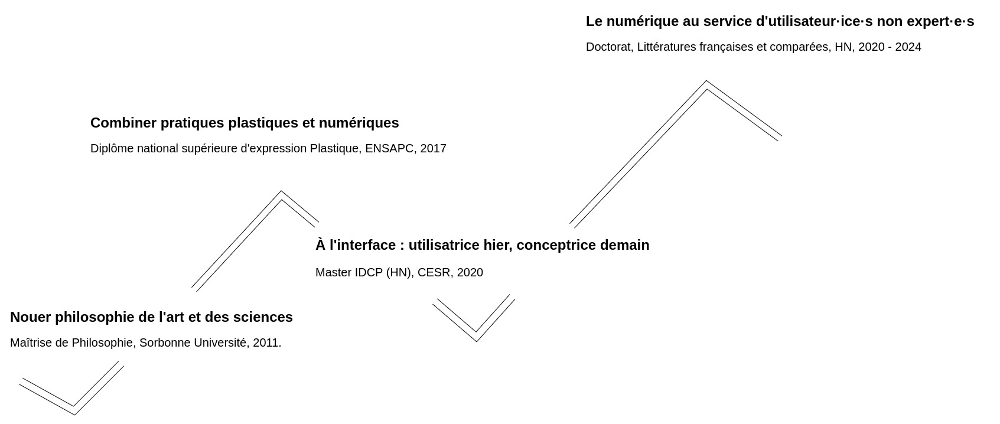

Caroline Koudoro-Parfait
Docteure en Humanités numériques et Littérature comparée
About Me
Dr. Caroline Koudoro-Parfait earned her PhD in Digital Humanities and Comparative Literature on January 6, 2025. Her doctoral research, supervised by Glenn Roe and co-supervised by Gaël Lejeune and Motasem Alrahabi, focuses on developing of artificial intelligence systems for the automatic recognition of spatial named entities. Her work specifically applies these systems to a corpus of 19th-century French novels, bridging the gap between literary studies and cutting-edge computational methods. Dr. Koudoro-Parfait holds a Master’s degree in Digital Humanities from the Centre for Advanced Renaissance Studies in Tours and a DNSEP (Diplôme National Supérieur d'Expression Plastique) from the École Nationale Supérieure d’Arts de Paris-Cergy. In 2011, she also earned a Master’s degree in Philosophy and Sociology from Sorbonne University. Her research interests include user-centered design, with a particular focus on developing systems tailored to non-expert users in computing. This perspective drives her commitment to making advanced technologies accessible and usable for diverse audiences.

Bio
Work Experience
Education
Publications
Conférences internationales avec comité de lecture
-
1. Koudoro-Parfait, C., Hernandez, M., Lejeune, G., Dupont, Y. (2025).
Epimethee – A Workflow from OCR to Spatial Mapping.
In: Yin, XC., Karatzas, D., Lopresti, D. (eds) Document Analysis and Recognition – ICDAR 2025.
ICDAR 2025. Lecture Notes in Computer Science, vol 16025. Springer, Cham.
https://doi.org/10.1007/978-3-032-04624-6_1,
Conférence de Rang A. - 2. Koudoro-Parfait, C., Fief, C. (2025). Évaluer les erreurs d'étiquetage de la reconnaissance d'entités nommées sur des transcriptions OCR de romans français [Evaluating Labeling Errors in Named Entity Recognition on OCR Transcriptions of French Novels]. Proceedings of the Conference Humanistica 2025, Dakar, Sénégal.
- 3. Koudoro-Parfait, C., Alrahabi, M., Dupont, Y., Lejeune, G., Roe, G. (2023). Mapping spatial named entities from noisy OCR output: Epimetheus from OCR to map. Scholger, W., Vogeler, G., Tasovac, T., Baillot, A., Helling, P., Collaboration as Opportunity (DH2023), ADHO Digital Humanities Conference, Graz, Austria, 154-155. https://zenodo.org/records/8108050 (zenodo)
-
4. Koudoro-Parfait, C., Lejeune, G., Buth, R. (2022).
Reconnaissance d’entités nommées sur des sorties OCR bruitées: des pistes pour la désambiguïsation morphologique automatique
[Named Entity Recognition on Noisy OCR Output: Approaches to Automatic Morphological Disambiguation].
Proceedings of the 29th Conference on Natural Language Processing. TAL and Digital Humanities Workshop (TAL-HN), ATALA, Avignon, France, 45-55. https://aclanthology.org/2022.jeptalnrecital-humanum.6/ (aclanthology) - 5. Koudoro-Parfait, C. (2022). Évaluation de la tâche de clustering pour l’alignement de formes contaminées d’entités nommées issues d’un corpus OCR bruité [Assessment of Clustering Methods for Aligning Contaminated Named Entity Variants in Noisy OCR Corpora]. Corro, C., Lejeune, G. Proceedings of the Symposium on the Robustness of NLP Systems, Paris, France, 5-8. https://hal.science/hal-03853541v1/file/main.pdf (hal-03853541f).
- 6. Alrahabi, M., Lejeune, G., Parfait, C., Roe, G. (2021). Discovering Spatial Relations in Literature : What is the influence of OCR noise? Kanner, A., Mäkelä, E., Marjanen, J., Tolonen, M., Oberbichler, S., Duong, Q., Pivovarova, L., Ali, D., Verstockt, S., Ollion, É., Shen, R., Arnold, M., Brown, D., Adam, R., Balasubramanian, S., Charvat, V. M., Füllsack, M., Kleinert, J., Misera, H., … Lomazow, S. (2021). The Book of Abstracts for What's Past is Prologue: The NewsEye International Conference. What's Past is Prologue: The NewsEye International Conference - Towards a future of interdisciplinary collaboration between Cultural Heritage, Digital Humanities, Computer Science and Data S. 20. https://doi.org/10.5281/zenodo.5167375 (Zenodo)
- 7. Arruga, M., Koudoro-Parfait, C. (2020). Development of digital platform about stained glass restoration data in France. MSHValdeLoire, in FAIR Heritage -17 and 18 juin 2020. [Vidéo]. Canal-U. https://doi.org/10.60527/adxq-pe72. (vidéo consultée le 25 novembre 2025)
- 8. Parfait, C., Arruga, M., Tigero, R. (2020). Espace Numérique du Vitrail - ENVi, Développer une plate-forme numérique sur les données de restauration du vitrail en France. Colloque Humanistica 2020.
Revues internationales avec comité de lecture
- 1. Koudoro-Parfait, C., Petkovic, L., Roe, G. (2023). Analyse multilingue de l'impact de la correction automatique de la ROC sur la reconnaissance d’entités nommées spatiales dans des corpus littéraires [Multilingual Analysis of the Impact of OCR Correction on Spatial Named Entity Recognition in Literary Corpora]. Corro, C., Lejeune, G., Niculae, V. Revue TAL, Vol. 64 - no2 / 2023, 43-67. https://www.atala.org/index.php/content/tal_64_2_2
Conférences nationales avec comité de lecture
- 1. Koudoro-Parfait, C., Lejeune, G., Petkovic, L. (2023). Correction automatique des interférences OCR dans la reconnaissance d’entités nommées spatiales : réel gain ou perte de l’information ? [Automatic Correction of OCR Interference in Spatial Named Entity Recognition: Real Gain or Loss of Information?]. Gugliotta, E., Pallanti, L., Kraif, O., Fabry, I., Barletta, M. Journée d'étude Bruit de fond ou valeur ajoutée ? Gérer le bruit lors des traitements informatiques des corpus linguistiques [Symposium—Background Noise or Added Value? Managing Noise in the Computational Processing of Linguistic Corpora]. Grenoble, France, 2-5. https://hal.science/hal-05176056 (hal-05176056)
- 2. Koudoro-Parfait, C., Lejeune, G. (2022). De la création des corpus numériques à leur utilisation : les interférences dans la reconnaissance d'entités nommées spatiales [From Building Digital Corpora to Using Them: Challenges and Interference in Spatial Named Entity Recognition]. Gherdevich, D., Mermet, É. Séminaire Des sources aux systèmes d’information géographique : des outils pour la cartographie dans les humanités numériques [Seminar: From Sources to Geographic Information Systems — Tools for Mapping in Digital Humanities], Paris (online), France, 1-2. https://hal.science/hal-05176021 (hal-05176021)
Teaching experiences
ATER, Sciences du Langage et Informatique -- Sorbonne Université, 2023 - 2025 = 380 heTDs
| Nom de la matière | Années | Niveau | heTDs | Supports | |
|---|---|---|---|---|---|
| CM | TD | ||||
| Total = 380 heTDs | 141 | 239 | |||
| Programmation Python S5, S6 | 23/25 | L3 | 126 | 84 |
|
| Humanités Numériques | 23/24 | M2 | 3 | -- | Supports personnels : https://github.com/These-SCAI2023/M4LFHUNU |
| Analyse Lexicale en TAL | 23/25 | M1 | 1,5 | 4,5 | Supports hérités |
| Linguistique Informatique | 23/25 | L2 | -- | 6,5 | Supports hérités |
| PIX - Programmer et résoudre des problèmes informatiques | 23/25 | L2 | 10,5 | 144 | Supports hérités |
Chargée de cours, Programmation Python -- INALCO, 2021 - 2023 = 171.5 heTDs
| Nom de la matière | Années | Niveau | heTDs | Supports | |
|---|---|---|---|---|---|
| CM | TD | ||||
| Total = 171.5 heTDs | 73.5 | 98 | |||
| Algorithmique et structuration des données ; Programmation Python | 22/23 | L3 | 36 | 48 | Supports personnels : https://github.com/These-SCAI2023/Algorithmique_INALCO_2021-2023 |
| Algorithmique et structuration des données ; Programmation Python | 21/22 | L3 | 37.5 | 50 | idem |
Enseignante, DSAA 1 Numérique (grade Master) -- ENSAAMA, Mars 2026 = 8 heTDs
| Nom de la matière | Années | Niveau | heTDs | Supports | |
|---|---|---|---|---|---|
| CM | TD | ||||
| Total = 8 heTDs | |||||
| Les systèmes IA pour la création littéraire : Programmation Python | 25/26 | M1 | -- | 8 | En cours d'élaboration |
Portfolio
Named-entity recognition / OCR / GIS
Épiméthée github repository
This workflow extracts place names from text (digitised or not) and then retrieves their geographic coordinates (Geopy) in order to map them.